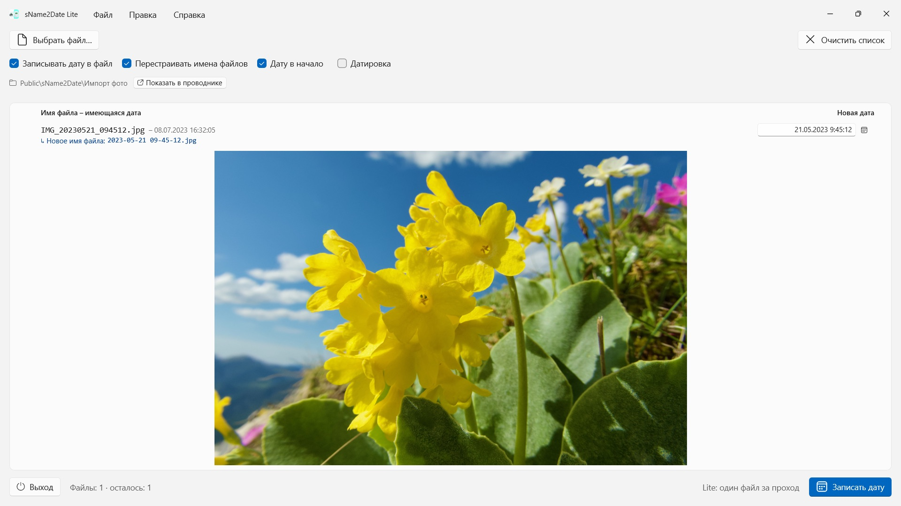
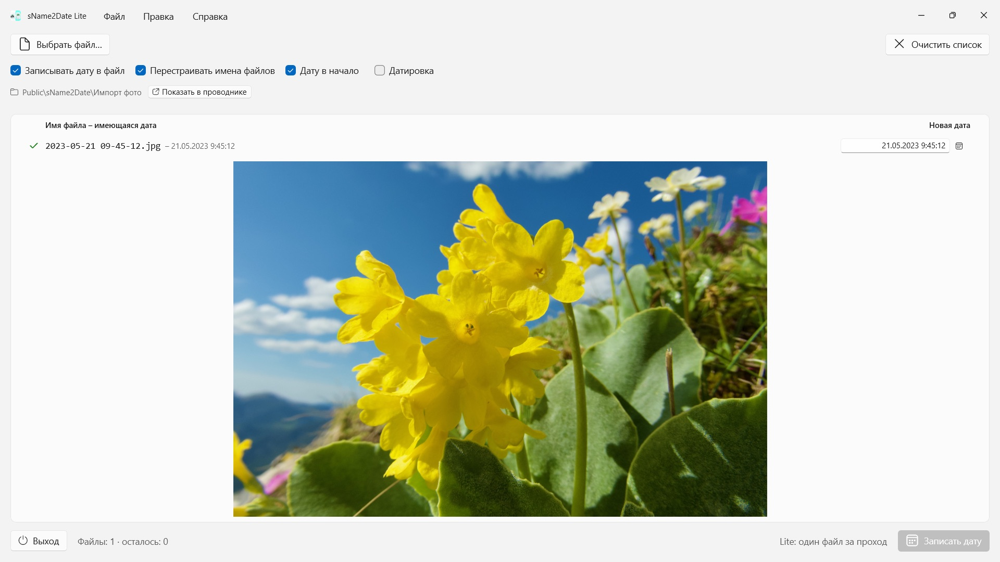

sName2Date Lite
Читает дату из имени файла — больше десятка вариантов записи, названия месяцев на языке приложения и по-английски
Берёт дату из имени файла и записывает её в фотографию или фильм как дату съёмки — чтобы фотокаталог и Проводник расставили файл правильно. Один файл за проход, бесплатно, всё отменяется по Ctrl+Z.


Многие фотографии и фильмы носят свою дату в имени файла, как и аудиозаписи и документы вроде PDF, — но не там, где её ищут программы. Если вы забираете снимок из чата, со сканера или из старого архива, то получаете файл вроде IMG_20240115_103000.jpg, Отпуск 15.01.2024.jpg или Счёт 23112024.pdf, который в любом фотокаталоге и в Проводнике показывается сегодняшним числом.
sName2Date читает дату из имени файла и записывает её в файл как дату съёмки. Если её там ещё нет, она создаётся. У PDF и других файлов без даты съёмки приложение задаёт дату создания и дату изменения файла. Эта версия берёт по одному файлу за проход — и умеет с ним всё.
25 языков: английский, немецкий, чешский, хорватский, нидерландский, финский, французский, венгерский, итальянский, японский, корейский, норвежский (букмол), персидский, польский, португальский (Бразилия и Португалия), румынский, русский, испанский, шведский, тайский, турецкий, украинский, китайский (упрощённый и традиционный). Приложение следует языку интерфейса Windows.
РАСПОЗНАВАЕМЫЕ НАПИСАНИЯ
Дата и время в распространённых формах, среди прочего:
- 2024-01-15 10-30-00
- IMG_20240115_103000
- IMG-20240115-WA0001
- 2024-01-15 · 2024 01 15 · 2024_01_15
- 15.01.2024 · 15-01-2024 · 15.01.24 · 15012024
- 15 янв. 2024 · 15 марта 2024 · January 15 2024
- 2016 04 · 04-2016 — только год и месяц
Названия месяцев словами читаются на языке приложения и по-английски, в полной форме и в сокращённой.
Если в имени стоит только дата, время подставляется — какое именно, задаёте вы. Если нет и дня, берётся первое число месяца, и строка сообщает об этом. Если дат в имени несколько, выигрывает первая. А там, где день и месяц можно поменять местами, решаете вы — значение по умолчанию берётся из региональных форматов Windows, а такие файлы отмечаются отдельно, вместо того чтобы угадывать молча.
Если даты в имени нет вовсе, введите её справа в строке. Так можно указать дату вплоть до 1826 года — года старейшей сохранившейся фотографии; отсканированные снимки XIX века датируются точно так же, как вчерашние.
ЧТО ИМЕННО МЕНЯЕТСЯ
Записываются EXIF DateTimeOriginal и DateTimeDigitized, а также TIFF DateTime, у фильмов и звукозаписей — дата создания в контейнере. По желанию — и дата создания и изменения самого файла.
Данные изображения остаются нетронутыми: JPEG не пережимается, фильм не перекодируется. У фильмов и звукозаписей приложение, как правило, меняет лишь несколько байтов в контейнере, вместо того чтобы переписывать его целиком, — так и большой фильм готов за мгновение. После записи приложение перечитывает дату; цвет строки показывает, куда она попала.
В сам файл дата съёмки записывается у JPEG, TIFF и HEIC (с расширениями для изображений HEIF от Microsoft), у форматов фильмов MP4, MOV и M4V и у звуковых форматов M4A и M4B. PNG, GIF, WebP, AVI и RAW-снимки получают рядом XMP-sidecar, который читают многие фотопрограммы, — в строке это показано синей галочкой.
И ФАЙЛЫ, КОТОРЫЕ НЕ МОГУТ ХРАНИТЬ ДАТУ СЪЁМКИ
У PDF, текстового файла, таблицы вообще нет поля для даты съёмки — и всё же они попадают в список. Приложение задаёт для них дату создания и дату изменения файла, единственное место, куда эти сведения вообще могут попасть; в строке это показано оранжевой галочкой вместо зелёной. Здесь расширение не играет роли: PDF, тексты, таблицы, архивы, что угодно.
Если файл трогать не нужно, снимите вверху окна флажок Записывать дату в файл; тогда приложение только перестраивает имя.
ИМЯ ЗАОДНО
По желанию приложение тем же проходом приводит к виду ISO и имя файла: из Отпуск 15.01.2024.jpg получается 2024-01-15 12-00-00 Отпуск.jpg. Имя и дата съёмки после этого говорят одно и то же.
ВСЁ МОЖНО ОТМЕНИТЬ
Один проход полностью отменяется по Ctrl+Z — дата съёмки, отметки времени файла и изменённое имя файла. Ctrl+Y возвращает его обратно.
БОЛЬШЕ ЗА РАЗ: ПОЛНАЯ ВЕРСИЯ sName2Date
Полная версия sName2Date берёт вместо одного файла целую папку: она читает её, по желанию вместе со всеми подпапками, показывает для каждого файла найденную дату и записывает всю стопку за один проход — даже тысячу снимков одной поездки. Файлы, у которых дата съёмки уже есть, она при желании пропускает.
Для отдельного файла достаточно и этой версии.
НА ВАШЕМ ПК, И ТОЛЬКО ТАМ
Ни учётных записей, ни облака, ни аналитики, ни рекламы. Приложение работает только с теми файлами, которые вы ему дали. Каждый язык — с полной справкой.
- Требуется Windows 11 или новее
- 24 языка
- Поддержка: SwiftAppsBavaria@gmx.net
- Политика конфиденциальности sName2Date